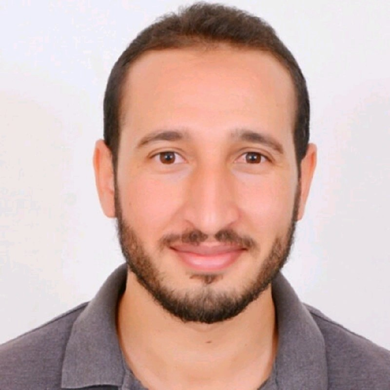

EDP non linéaires et fractionnaires
Systèmes paraboliques, opérateurs non locaux, diffusion à exposants variables, espaces fonctionnels et théorie des solutions faibles.
Mathématiques appliquées · Informatique · Intelligence artificielle
Docteur en mathématiques appliquées et informatique
Professeur agrégé de mathématiques
Enseignant et chercheur, je m'intéresse à l'analyse des équations aux dérivées partielles, à la modélisation, à l'optimisation et au calcul scientifique, ainsi qu'à leurs applications en traitement d'images et en intelligence artificielle.

Une activité située à la rencontre des mathématiques, de l'informatique scientifique et des applications.
Docteur de l’Université Cadi Ayyad et professeur agrégé de mathématiques, je développe une approche qui associe rigueur théorique, modélisation mathématique et expérimentation numérique.
Mes travaux portent principalement sur les EDP non linéaires et fractionnaires, l’optimisation sous contraintes EDP, la convergence de schémas numériques et les méthodes de restauration d’images.
Je m'intéresse également aux rapprochements entre modèles mathématiques, apprentissage profond et vision par ordinateur.
Docteur de l'Université Cadi Ayyad (Faculté des sciences Semlalia, Marrakech), mes recherches se situent à l'interface de l'analyse mathématique, de la modélisation, de l'optimisation sous contraintes EDP et du traitement d'images.
De l'étude théorique des modèles à leur résolution numérique, avec un intérêt particulier pour le débruitage, la restauration et l'analyse d'images.
Systèmes paraboliques, opérateurs non locaux, diffusion à exposants variables, espaces fonctionnels et théorie des solutions faibles.
Schémas de volumes finis, éléments finis et différences finies ; stabilité, convergence et implémentation numérique.
Optimisation sous contraintes EDP, contrôle optimal, analyse non lisse et approches variationnelles.
Débruitage, reconstruction, préservation des contours et développement de modèles de diffusion adaptative.
Apprentissage profond appliqué aux images, segmentation, réseaux de type U-Net et méthodes hybrides entre modèles et données.
Construction d'algorithmes, résolution de systèmes numériques et évaluation de la qualité des résultats expérimentaux.
Compétences mobilisées en recherche, en simulation et dans la préparation de supports pédagogiques.
Articles évalués par les pairs, contributions à des ouvrages collectifs et manuscrits soumis.
Evolution Equations and Control Theory, 21, 131–154.
Frontiers in Artificial Intelligence, 9, 1741082.
Scientific Reports, 16, article 28444.
Mathematical Methods in the Applied Sciences, 47(9), 7714–7741.
Moroccan Journal of Pure and Applied Analysis, 8(3), 401–437.
Mathematics and Intelligent Systems in Industry, Springer Proceedings in Mathematics & Statistics, vol. 534.
Advances in Applied and Computational Mathematics, Trends in Mathematics, Birkhäuser.
Manuscrit soumis à Computational and Applied Mathematics.
Manuscrit soumis à ESAIM: Mathematical Modelling and Numerical Analysis.
Enseignements effectivement assurés à l’ENSA Safi et accompagnement pédagogique en cycle préparatoire d’écoles d’ingénieurs.
ENSA Safi · 2024–2025 · 56 h
ENSA Safi · 2020–2021 · 56 h
ENSA Safi · 2020–2021 · 28 h
ENSA Safi · 2020–2021 · 56 h
Accompagnement pédagogique (ENSA Marrakech, 2020–2026) : soutien en Analyse 3, Algèbre 3, Analyse 4, Probabilités et Analyse numérique, en 2e année du cycle préparatoire.
Domaines d'enseignement en adéquation avec ma formation, mes travaux de recherche et mes compétences en programmation et en calcul scientifique.
Mathématiques fondamentales
Mathématiques appliquées
Calcul scientifique
Informatique
IA et traitement d'images
Méthodes et outils
Contact et collaboration
Échanges scientifiques, projets interdisciplinaires, enseignements universitaires et collaborations de recherche.